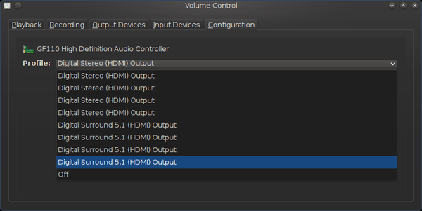

Fixing NVIDIA HDMI Audio on Kubuntu 12.04 LTS¶
I was having trouble getting NVIDIA HDMI audio working under Kubuntu 12.04 LTS with my GTX570 card. The HDMI audio output capability appeared to have been correctly detected in the Phonon Sound and Video Configuration control:
But none of the possible variations of devices and profiles enabled the audio.
However, when I installed and started the PulseAudio Volume Control:
$ sudo apt-get install pavucontrol
$ pavucontrol
It showed more profiles than were available in the Phonon Sound control:

When I selected the last of these profiles, the audio was enabled.
The Phonon control automatically detected the profile changes made in the PulseAudio control but when that last (working) profile was selected in the PulseAudio control, the Phonon profile showed as empty.